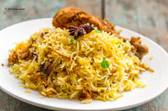
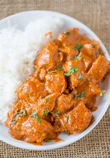
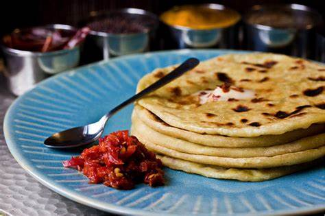
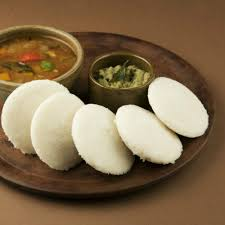
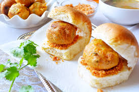
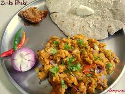

It is the seventh-largest country by area, the second-most populous country, and the most populous democracy in the world. Bounded by the Indian Ocean on the south, the Arabian Sea on the southwest, and the Bay of Bengal on the southeast, it shares land borders with Pakistan to the west; [e] China, Nepal, and Bhutan to the north; and Bangladesh and Myanmar to the east. In the Indian Ocean, India is in the vicinity of Sri Lanka and the Maldives; its Andaman and Nicobar Islands share a maritime border with Thailand and Indonesia. So due to its great diversity its has a variety of cuisines itself.
NORTH INDIA
North cuisine is a part of cuisine, from the region of Northern India which include cuisines of Jammu and Kashmir, Punjab, Chandigarh, Haryana, Himachal Pradesh, Rajasthan, Uttarakhand, Delhi, Uttar Pradesh, Bihar, and Madhya Pradesh.
. Chicken Dum Biryani
Flavourful biryani with chicken cooked in assorted spices and garnished with sliced green chillies and ginger juliennes. A quick and easy home made biryani is something you cannot escape.
Butter Chicken
Marinated overnight, the chicken is roasted and cooked in tomato puree, cream and masalas. A perfect dinner party recipe, this North-Indian style chicken recipe is made throughout the country with equal zest. Enjoy this creamy chicken dish, marinated overnight and then cooked to perfection.
Chole Bhature
PARATHAS
Punjabi breakfast, lunch and dinner is incomplete without the sumptuous parathas. The thin flat bread is a healthy choice of meal and can be relished with pickle or curd/p>
SOUTH INDIAN
Dosa
traditional breakfast food made of fermented rice-and-lentil batter, a dosa is much like a crispy thin crepe. It’s accompanied by sambar and coconut chutney.
Idilis
Soft, fluffy and ivory-coloured, idlis are what many South Indian families eat for breakfast.
Pongal
Pongal or Pongali is a popular rice dish in the South Indian states of Andhra Pradesh, Karnataka and Tamil Nadu.
WEST INDIA
Vada Pav
A plate of steaming hot vada pav is what might define the cuisine of Mumbai.
Zunka Bhakri
A traditional Maharashtrian dish, zunka bhakri is a sabzi made with chickpea or besan flour.